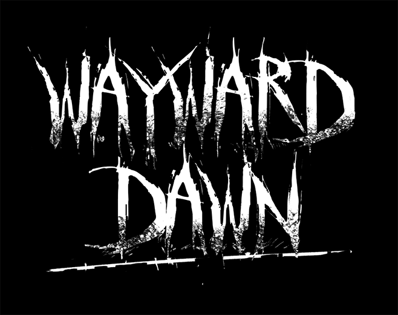
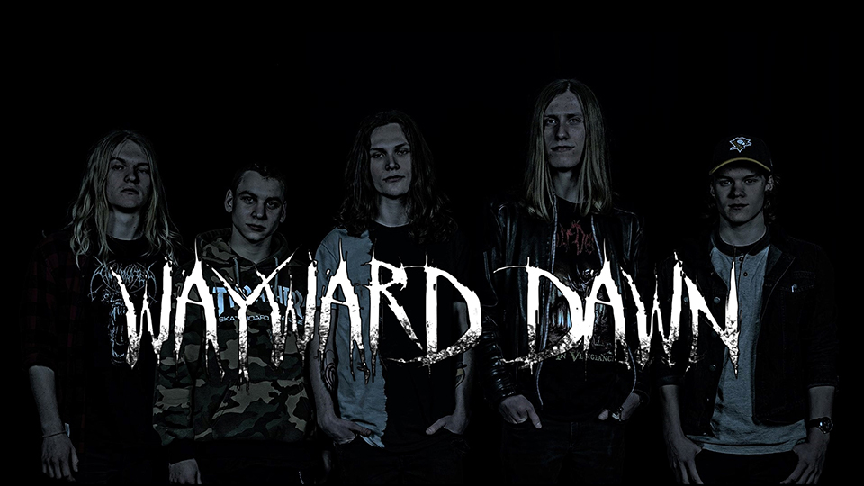

Sådan skaber du balance mellem musik og forretning fra starten
Hvis du vil gøre mere ud af din musik, end bare at have det som hobby, så er der to hovedregler, du altid skal huske på:
- Gør det ikke for pengenes skyld.
- Lad vær med at adskille musikken fra forretning.
Nu virker det måske som om, at disse regler modsiger hinanden, men lad mig forklare, hvorfor de ikke gør. Hvis du laver musik for pengenes skyld, resulterer det oftest i, at du ikke kommer nogle vegne. Det der driver dig, skal i stedet være passionen for musikken.
Omvendt kan hverken du eller jeg leve i den drømmeverden, hvor man ikke skal tænke på forretningsdelen i musikbranchen. Om du har pladekontrakt eller ej, slipper du aldrig fra at skulle tænke på forretningsdelen. Derfor har jeg lavet 5 gode råd, til at kickstarte din musikkarriere:
1. Image! Image! Image!
For en virksomhed er noget af det vigtigste et godt brand og image. Det samme gælder dig eller dit band som musiker(e).
Før du begynder at tænke på at spille koncerter, lægge musik på nettet eller lave en facebook side, så skab et brand. Find et unikt band- eller artistnavn, få lavet et logo og få taget et portrætbillede.
Band- / artistnavn
Et unikt navn kan selvfølgelig være svært at finde på, men prøv at lade vær med at tænke for meget over det. Der behøver ikke at være en højere mening med navnet. Et band som 'Korn' har ikonisk navn, og der er ingen højere mening med det. Prøv også at lav et navn med to eller tre stavelser, da de er nemmest for publikum at råbe rytmisk i kor; "Lamb! Of! God! - Lamb! Of! God!".
Logo
Ligeledes er det vigtigt med et logo. Giv dine fans noget visuelt at huske dit navn på. Tænk især på den genre du spiller. Hvordan symboliserer dit logo din genre? F.eks. symboliserer dette logo klart et dødsmetal band:

Flere variationer af det samme logo er en rigtig god ide. Dit logo skal kunne passe ind i mange forskellige sammenhænge som plakater, facebook begivenheder, albumcovers, osv.
Derfor er det godt at have logoer til alle situationer:
Portrætbillede
Vis jeres fans hvem du/i er. Giv dem et ansigt til musikken. Det behøver ikke at være det helt store modelbillede i starten, men det må gerne være et billede i høj opsløsning. Derudover er det en god ide, at tilpasse farverne på billedet til genren, og sætte logoet på billedet. Gør det gerne aflangt, så det passer som et facebook coverbillede.
2. Skriv professionelt
Når du skriver til online musik magasiner eller spillesteder, er det vigtigt, at du skriver professionelt men ydmygt.
Du skal sælge dig og/eller dit band. Du skal selvfølgelig ikke lyve eller prale, men skriv ærligt og med selvtillid. Gør brug af de milepæle i opnår hen ad vejen, og eventuelt rosende citater fra andre. Derudover er det en god ide, altid at vedhæfte links til alle dine/jeres sider.
En pressetekst er et 'must' i musikbranchen. Den giver dig muligheden, for selv at forme beskrivelsen, som koncertarrangører og anmeldere skriver på henholdsvis koncert begivenheder og anmeldelser.
Del presseteksten op i to afsnit. Det første afsnit indeholder en kort, men præcis, beskrivelse af dig og din musik. Denne tekst udbygges jo flere milepæle du opnår. Det andet afsnit indeholder din biografi. Skriv om din historie som artist eller band. Denne udbygges også jo flere milepæle i opnår.
3. Gør din musik tilgængelig hurtigst muligt
Hvad er en musiker uden musik? En ukendt kunstner.
Efter du har skabt dit brand (se punkt 1), er det tid til at få musikken ud til folket. Dine fans skal have noget at lytte til efter en af dine koncerter. Det er helt okay, hvis kvaliteten ikke er professionel. Så skal du bare meddele klart, at det er demo sange.
Den billigste og mest effektive måde er gennem streaming tjenester. SoundCloud og YouTube er gratis, men tjenester som Spotify har flere brugere til lige præcis musik. Læs mere om hvordan du får din musik på Spotify og andre streaming tjenester i vores guide: "Få din musik på Spotify"
4. Internettet er et redskab - ikke vejen til succes
Internettet har gjort det nemmere, at dele vores musik. Men det skaber en masse støj i processen.
Med internettet har det aldrig været nemmere, at dele og sprede ens musik, end det er i dag. Men med så mange udbydere af skøn musik, er det nemt at blive overset.
Derfor er det vigtigt, at du indser, at internettet kun er et redskab, og ikke vejen til succes. Tag ud og spil en masse koncerter, og få folks interesse på den måde. Et godt live show giver nye lyttere et bedre indtryk, end en mp3-fil gør.
5. Invester tidligt
Du har allerede logoet. Hvorfor ikke sælge det?
Der går lang tid før musik og koncerter giver profit. Merchandise kan holde din økonomi selvkørende. Det er en god ide, at investere i det tidligt, så du ikke står med rent underskud for alt dit arbejde. T-shirt er klassikeren, men du kan også investere i papsleeve CD'er med de demo sange, som du allerede har ude på streaming tjenesterne.
Læs mere om merchandise i vores guide: "Guide til merchandise"